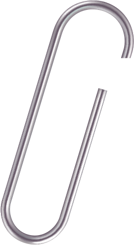
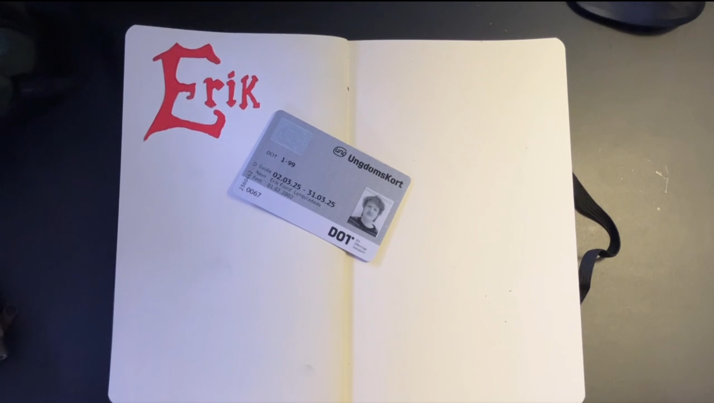
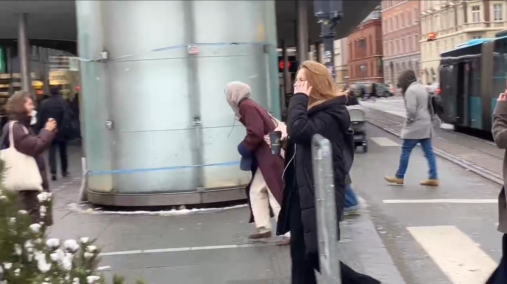
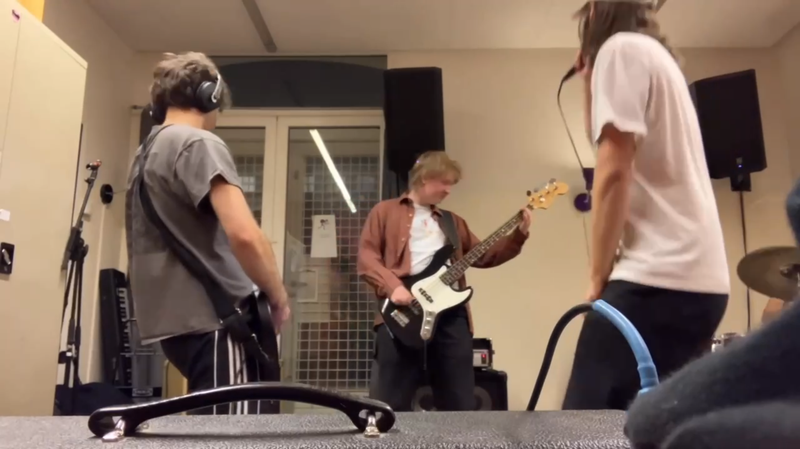
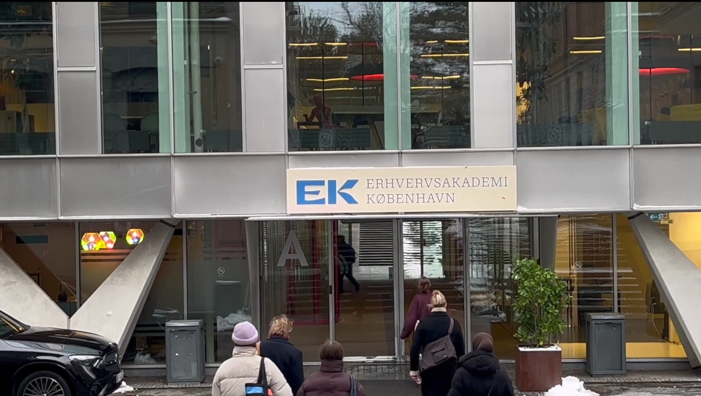
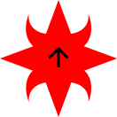

Tema 1 - Introuge
Temaet
Vi fik til opgave at producere en lille introduktions video som fortalte lidt om gruppens medlemmer samt et personligt “præsentationskort” som skulle laves i figma. Derudover var der flere præsentationer som introducerede uddanelsen og hvad man kan ende med at lave efter den.


Formålet
Formålet med opgaven var at ryste holdet sammen og give et godt socialt grundlag samtidigt med at få en lille forsmag på uddanelsen, arbejdsprocesser i gruppe konstalationer og figma. Derudover var der oplæg fra tidligere uddannede multimediedesignere, for at give indblik i branchen og karrieren som multimediedesigner.

Proces
Da dette var det første projekt på uddanelsen var processen meget lige til
og bestod hovedsageligt af at komme på en ide med sin gruppe, filme den
og redigere den. I vores gruppe brainstormede vi en del og kom frem til at alleskulle filme et par
videoer som
repræsenterede dem samt en video af at man cykler et sted hen, til slut i videoen kommer vi alle frem
til EK trods vores
forskellige hverdage.
Processen til præsentationskortet var ret anderledes da det var en individuel opgave,så jeg satte mig
ned og skitsede et
par hurtige ideer og gik derefter i kast med at lære figma lidt at kende.
Løsning
Videoen endte med at vise alle medlemmers hverdag og hobbyer og at vi alle, trods vores forskelligeheder
alle kom frem
til EK sammen, vi valgte at musikken skulle være lidt upbeat og jeg fandt en gammel demo af en sang jeg
havde lavet
frem. Sangen var et match og videon blev færdig.
Til præsentationskortet endte jeg med at gå med en rød stjerneform som jeg har brug her og der i et par
år da jeg følte
den repræsenterer mig godt. Jeg fandt et billede af mig selv frem og skrev en lidt om hvem jeg er og
mine passioner. Den
information satte jeg ind i nogle halv-abstrakte tekstbokse og så var kortet færdigt


Læring og reflektion
Det var fedt i dette tema at få lov til at lege med figma og lære det lidt at kende så det ikke virker så skræmmende i fremtiden. Derudover var det også en behagelig måde at lære folk lidt bedre at kende på, det med at have en fælles opgave er en god samtale starter og man mærker hurtigt folks personligheder igennem deres kreative processer.
Gå til toppen
